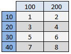
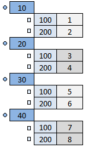

The purpose of the atom is to execute a model several times while the input parameters are varied according to a list of parameter ranges. Characteristic for a sweep is that it its input can be imagined as a rectangular grid or matrix (see below) and that every node of that grid is used. In comparison to that, a study might not use every node on a grid and the grid does not need to be rectangular. The execution of a model is also called "simulation" and the model that is controlled by a might consist of several sub models.
Sweep sweep = studies.createSweep("sweep");
If there are for example two parameter ranges [10,20,30,40], [100,200], you can imagine a 4 x 2 table or a grid with 8 nodes, where each node represents the input for a simulation (e.g. {10,100} or {30,200}). The first value of the first range (e.g. 10) is included in the first simulation. That value is kept constant while the remaining range is varied.
The numbers 1...8 represent the simulation order (="study index"). A sweep can also be understood as a tree structure, where the elements of the first range build the main tree nodes, the elements of the second range build sub level tree nodes and so on. Each existing path in the tree (e.g. 10=>100 or 30=>200) corresponds to an individual simulation.
